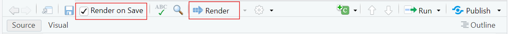
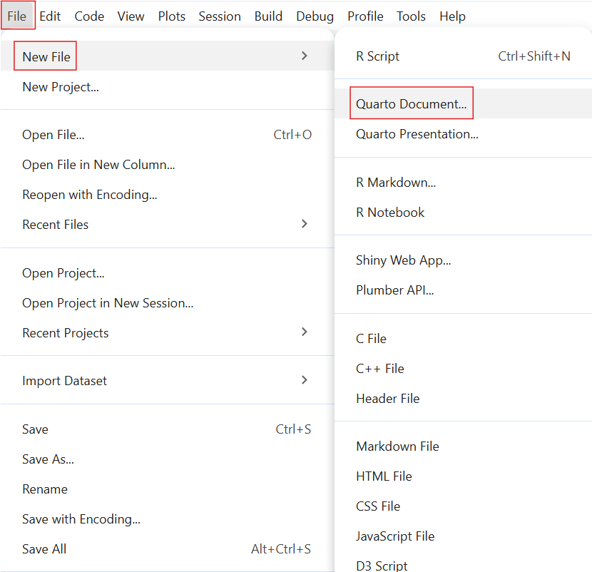
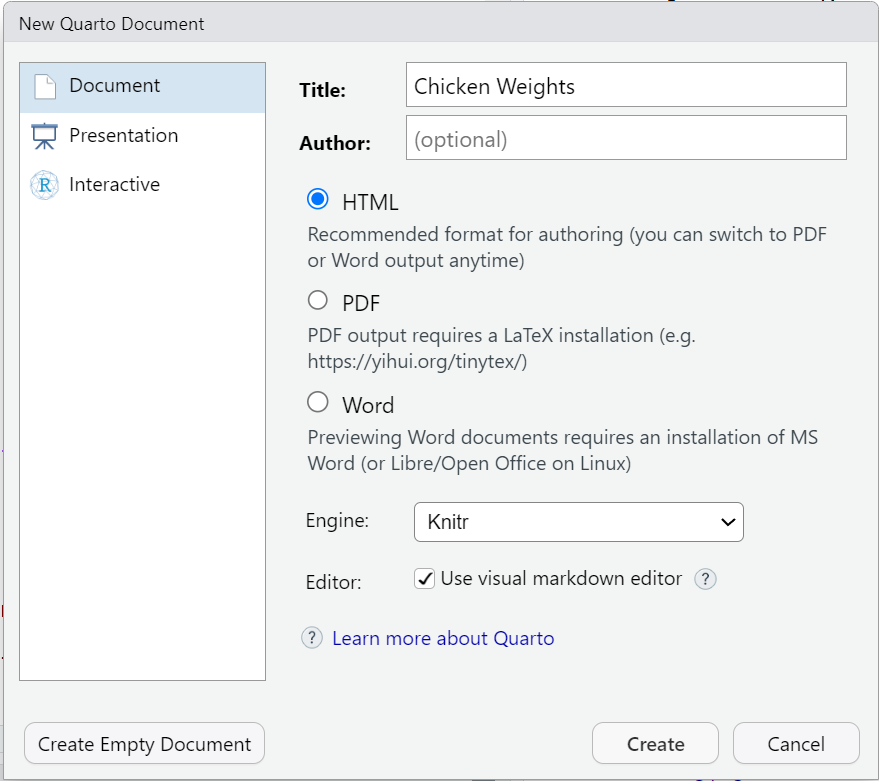
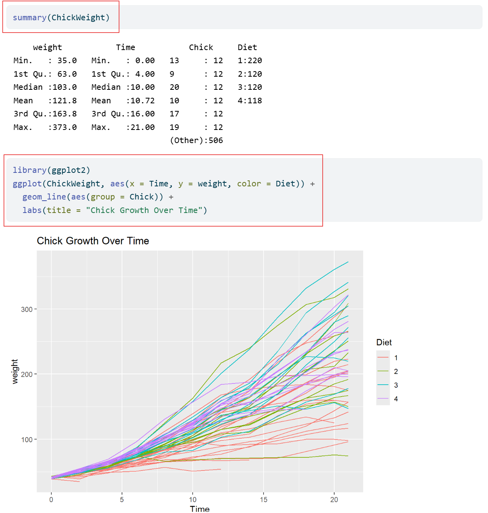
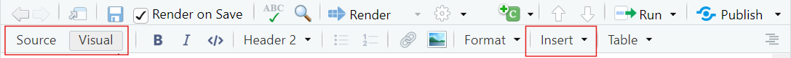
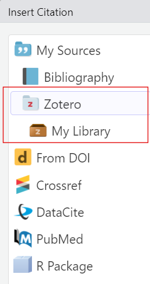
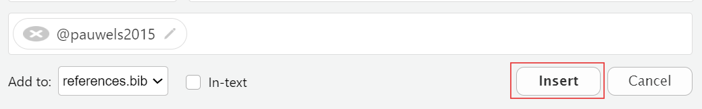
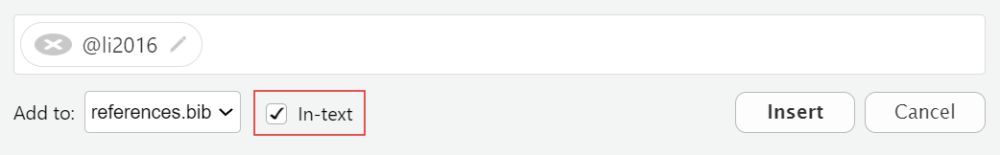

This work was originally created by Anna Krystalli from RSE-Sheffield under a MIT licence (original repository). It was subsequently adapted by Malika Ihle during her time at Reproducible Research Oxford, with the contributions of Adam Kenny. The overview image is from Dumitru Uzun. The exercice is based on the research of Jen Bright who also kindly provided the gifs used in the exercice. It is now maintained by Malika Ihle and Sarah von Grebmer zu Wolfsthurn at the LMU Open Science Center. This current work by Elizabeth Waterfield, Sarah von Grebmer zu Wolfsthurn and Malika Ihle is licensed under a CC-BY-SA-4.0 Creative Commons Attribution 4.0 International SA License licence. It permits unrestricted re-use, distribution, and reproduction in any medium, provided the original work is properly cited. If you remix, transform, or build upon the material, you must distribute your contributions under the same license as the original.
Code snippets are dedicated to the public domain and licenced under a CC0 1.0 Creative Commons Universal Licence. You may use, modify, distribute, and sell the code snippets for any purpose, without permission or attribution. The code snippets are provided “as is”, without warranty of any kind.
In RStudio, go to the Terminal tab and install tinytex by typing quarto install tinytex into your terminal
Type quarto --version into the terminal to check with version of Quarto you are using (should be 1.7 or higher)
Important
Make sure to have a recent version of R (Version 4.4.3 or higher) and RStudio (Version 2025.05.1+513 or higher) installed before you install/update Quarto. For installing R and RStudio, see here.
Questions from previous submodule?
Before we start: Survey time!
On a scale of 1 to 5, what is your level of familiarity with Quarto (e.g., Quarto concepts, tools within Quarto)? (1 = Not familiar at all, 5 = Very familiar)
1
2
3
4
5
Which of the following concepts or skills do you feel most confident about when using Quarto? (Select all that apply)
Creating and rendering basic Quarto documents (.qmd)
Using YAML headers to customize document settings (e.g., title, author names, output format)
Embedding R or Python code chunks and viewing output
Producing PDF, HTML or Word documents with Quarto
Using Quarto in combination with version control (e.g., Git, GitHub)
Including citations and bibliographies via a citation manager
None of the above
Discussion of survey results
What do we see in the results?
Where are we at?
Previously:
Basic and advanced R skills (data manipulation, plotting, etc.)
Introduction to version control using Git
Collaborative coding using GitHub
Up next:
Combining text, code, and media to create a simple website
Publishing the website on GitHub
Quarto and Open Science
Quarto is a tool that can help us connect ideas, data, and people through open and reproducible research.
Covered in this session
Key terms and definitions: Understanding core concepts in Quarto
Setting up Quarto: Opening a Quarto document in RStudio
Authoring: Writing text and structuring content in Quarto
Code chunks: Running and displaying code in Quarto
Additional authoring features: Inserting images and links in Quarto
Citations: Adding citations and bibliography with Zotero in Quarto
Publishing: Sharing your Quarto document on GitHub
Learning goals
At the end of this session, you should be able to:
Create, edit, and render Quarto documents
Use key Quarto features like code chunks, YAML headers, citations, and output formatting
Insert citations and generate a bibliography with Zotero directly into the Quarto document
Publish and share your work using GitHub Pages
Key terms and definitions
.qmd file
YAML header
Code chunks
Quarto markdown text
Key terms and definitions
.qmd file: The type of file the Quarto document is saved as.
YAML header: The section at the top of the Quarto document that controls settings like the title, output format, and author.
Code chunks: The sections of the document that contain code (from R or Python, for example) that are used for showing results such as tables, plots, or calculations.
Quarto markdown text: Text written using Markdown syntax to structure and format the content of a document.
Note
The YAML header, code chunks, and markdown text are the components of the .qmd file.
What is Quarto?
An open-source scientific and publishing system that combines text, code and media to produce transparent and reproducible work that can be freely accessed by others.
With Quarto, you can easily:
Analyze data, text, or research content
Share results and outputs like reports, slides, or websites
Reproduce entire workflows
Quarto Website
You can always check out the Quarto Website to learn more.
So, why Quarto?
Readability: Research is more accessible when text, analyses, results and code are combined within the same document
Step
Traditional workflow
Quarto workflow
Write text
e.g., in an MS Word document
Same file
Run analysis
e.g., in a code editor
Same file
Insert results
Copy-paste results
Automatic
Generate figure
in statistical programme
Same file
Update results
Manual redo
Re-run document
Update figure
Manual redo
Re-run document
So, why Quarto?
Reproducibility: Research is more reliable when others can clearly see how results were produced and reproduce them from the original code and data.
Current challenges:
Research outputs are often separated from the code that generated them
Results can become outdated as analyses change
It can be difficult to share workflows clearly with others
How Quarto can help:
Keeps text, code, and results in a single, executable document
Ensures results are regenerated directly from the underlying code
Supports transparent and shareable research workflows
“Rendering” in Quarto
What is rendering? The process where Quarto runs the code, combines it with the text, and creates a final output.
There are two ways to render in Quarto:
Render on Save: Quarto will automatically re-render the document each time you click “Save”
Manual Rendering: You have to click on the “Render” each time you want to see the output

You can find both Render on Save and Manual Rendering at the top of your workspace.
Quarto modes
You can write Quarto documents in Source mode or Visual mode in RStudio.
Source mode allows you write directly in plain text/Markdown Syntax, allowing for more control and it’s closer to raw code
Visual mode gives a WYSIWYM-style interface which is easier for beginners, but sometimes hides syntax
Note
Choosing modes is part of the authoring process, and it allows you to format the text, add code, and build your document.
Creating a Quarto document
These are the steps to create a Quarto Document in RStudio:

Select “File”
Select “New File”
Select “Quarto Document”
Setting up a Quarto document

You can set some of the YAML header details here:
Put in the title of your document
Choose an output format (the default format is HTML)
Hit “Create”
Practical exercise 1
Why make a new folder?
Creating a folder on your device helps you stay organized! Keeping all the files (such as Quarto documents and images) in one designated folder makes it easier for you to store and retrieve all materials related to the project or exercise.
Authoring a Quarto document
What is authoring?
The process of writing and structuring the Quarto document.
Consider it as a formula: Authoring = YAML Header + Markdown
To practice authoring in Quarto, let’s start with setting the YAML header and adding markdown text in Source mode.
Have you ever wondered what affects a chick's weight? This document explores the ChickWeight dataset using R. The goal is to compare chick weight across different diets and time points. Key steps include:- Loading the dataset - Visualizing growth trends - Summarizing results
This is an example of markdown text. Let’s use it to continue authoring and building our document.
Practical exercise 3
Authoring: The callout box
Quarto callout boxes can highlight important aspects of your document or provide supplementary information.
Important with Title
This is an example of a callout box to highlight particularly important information using callout-important
Tip with Title
This is an example of a callout box to give important tips using callout-tip
Note with Title
This is an example of a callout box to include additional information or context using callout-note
Warning with Title
This is an example of a callout box to include additional information or context using callout-warning
Authoring: Inserting a callout box
Here is the markdown text for inserting a callout note box:
::: callout-note## Based on Real DataThe ChickWeight dataset in R is based on real experimental data.:::
Important elements:
Begins and ends with three (!) colons :::
Specifies the style of the callout box with “-note”
The title of callout box is made by using ##
Practical exercise 4
When rendered, it should look like this:
Based on Real Data
The ChickWeight dataset in R is based on real experimental data.
Code chunks
= Sections of the document where you can write and execute pieces of code
There are multiple ways to insert code chunks:
Simply click the green Insert Code Chunk button on the toolbar
You can manually type 3 back ticks ``` then {r} to start a coding chunk, enter your code, then end the chunk with 3 back ticks
You can use the keyboard shortcut Ctrl + Alt + I (Windows/Linux) or Cmd + Option + I (Mac) to insert a code chunk then simply enter your code
Inserting code chunks
summary(ChickWeight)
library(ggplot2)ggplot(ChickWeight, aes(x = Time, y = weight, color = Diet)) + geom_line(aes(group = Chick)) + labs(title = "Chick Growth Over Time")
These are examples of R code chunks. Let’s use these to insert code chunks in our document.
Practical exercise 5
It should look like this:
```{r}summary(ChickWeight)``````{r}library(ggplot2)ggplot(ChickWeight, aes(x = Time, y = weight, color = Diet)) +geom_line(aes(group = Chick)) +labs(title ="Chick Growth Over Time")```
Adjusting the code chunks
Adjust how the code is portrayed by editing the YAML header:

Currently in our YAML header, we have it set to code-fold: false which means the code is visible and not collapsible.
Code chunks display settings
Here are some other code display settings that we can incorporate into our YAML header:
code-fold: true collapses the code so the reader can expand it
code-tools: true adds the functions “show code” at the top of the page and “copy” next to the chunks
echo: true both the code and the output is visible
Let’s edit the YAML header to make the code chunks collapsible and add code tools.
Practical exercise 6
In the YAML header, under the html section:
What have we learned so far?
Here’s a quick recap of what we have learned in this lesson so far:
✅Create a new Quarto Document in RStudio
✅Edit and render the Quarto Document as a website
✅Use key Quarto features like code chunks, YAML headers, and output formatting
Pre-break quiz: Your turn!
What’s the typical format of Quarto Markdown document?
.png file
.qmd file
.docx file
.mp3 file
In a Quarto document, what is the YAML header?
Summarizes the document into a single line
A place inside the Quarto document to store notes
The title of the document
The “settings” of the document
In a Quarto document, which component is primarily responsible for formatting narrative text (e.g., headings, bold text, lists, and paragraphs)?
Markdown text
YAML header
Code chunks
All of the above
Break! 10 minutes
Post-break survey discussion
What do we see in the results?
Additional authoring features
Quarto offers additional authoring features that make it more versatile and comprehensive. These include:
Adding links and hyperlinking text
Embedding media, for example images
Commonly used authoring features
If you want to learn more about advanced authoring features, click here for commonly used markdown syntax for additional authoring features.
Image by itself with no caption: 
Image with a caption below it: 
This is a caption about three yellow chicks in the grass.
Inserting images
You can even add a link to an image so that when you click anywhere on the image, it redirects you to that website.
Image with link: [](link)
Click on the image to access a published study on broiler chicks.
Practical exercise 7

Adding citations
What is Zotero? A free reference management tool to collect, organize, cite, and share research sources.
You can use Zotero in RStudio to easily insert citations into your Quarto document.
Adding citations with Zotero
To insert a citation:

Switch to the “Visual Editor” mode
→ Press the “Insert” button in the toolbar and select “Citation”
→ In the Zotero library, select the citation and click “Insert”
What you will notice:
bibliography: references.bib will be added to the YAML header
After rendering, a reference list or bibliography will be automatically generated at the end of the document with the citations used.
Adding citations with Zotero

You can select citations straight from the folders in your Zotero library
Each citation is assigned a short citation key based on the author and year (for example, “pauwels2015”).
Quickly cite in your document’s text using the citation key:
For regular citation, type @ followed by the citation key, wrapped in square brackets (for example, [@pauwels2015]).
For in-text citation, type @ followed by the citation key, for example @li2016. No square brackets.
Practical exercise 8
Let’s practice adding a citation using Zotero.
Diet affects chick body weight. In this study, low-energy feed made fast-growing chicks lighter, while slower-growing chicks compensated by eating more
Practical exercise 8

Practical exercise 9
Now, let’s practice adding in-text citations!
found that broiler chicks fed a higher nutrient-density diet gained more weight and did so more efficiently.
Practical exercise 9

Adding citations with Zotero
In your output, you should now have:
A citation
An in-text citation
A reference list (bibliography)
Changing the citation style
You can change the citation style by using Citation Style Language (csl) files directly from the Zotero website. For example, putting “csl: https://www.zotero.org/styles/apa” in your YAML changes the citation style to APA.
Publishing
What is publishing with Quarto?
= the process of sharing the rendered documents or projects online so it can become accessible to others.
You can publish the rendered html file to:
GitHub Pages
A personal website
Quarto Pub
Note: Of course you can always render to PDF and upload that to any preprint server or your personal website. But here we will focus on publishing to GitHub Pages.
Let’s end this session with a short quiz on topics covered in this lesson.
On a scale of 1 to 5, what is your level of familiarity with Quarto now after the session (e.g., Quarto concepts, tools within Quarto)? (1 = Not familiar at all, 5 = Very familiar)
1
2
3
4
5
Which of the following best describes Quarto?
quarto is a programming language
Quarto is a publishing system for reproducible documents
Quarto is a code editor
Quarto is a version control system
Which components are combined in the authoring process of Quarto documents?
Only YAML
Only Markdown
Both YAML and Markdown
None of the above
Which of these are examples of Markdown text formatting? (Select all that apply)
Bold text
Code chunks
Hyperlinks
Italic text
What is the purpose of code chunks in Quarto documents?
To include executable code and results within the document
To hide metadata
To insert references at the end of the document
To format text in a clear and concise manner
Why is including code in research documents important?
To make the document more difficult to read
To ensure only the author can reproduce results
To replace data collection
To make research reproducible and transparent
Discussion of survey results
References
Allaire, J., Teague, C., Scheidegger, C., Xie, Y., Dervieux, C., & Woodhull, G. (2025). Quarto (Version 1.8) [Computer software]. https://doi.org/10.5281/zenodo.5960048
Bregendahl, K., Sell, J., & Zimmerman, D. (2002). Effect of low-protein diets on growth performance and body composition of broiler chicks. Poultry Science, 81(8), 1156–1167. https://doi.org/10.1093/ps/81.8.1156
Duit, R., & Treagust, D. F. (2003). Conceptual change: A powerful framework for improving science teaching and learning. International Journal of Science Education, 25(6), 671–688. https://doi.org/10.1080/09500690305016
Forehand, M. (2010). Bloom’s taxonomy. Emerging perspectives on learning, teaching, and technology, 41(4), 47-56.
Li, J., Yuan, J., Miao, Z., Song, Z., Yang, Y., Tian, W., & Guo, Y. (2016). Effect of Dietary Nutrient Density on Small Intestinal Phosphate Transport and Bone Mineralization of Broilers during the Growing Period. PLOS ONE, 11(4), e0153859. https://doi.org/10.1371/journal.pone.0153859
Pauwels, J., Coopman, F., Cools, A., Michiels, J., Fremaut, D., De Smet, S., & Janssens, G. P. J. (2015). Selection for Growth Performance in Broiler Chickens Associates with Less Diet Flexibility. PLOS ONE, 10(6), e0127819. https://doi.org/10.1371/journal.pone.0127819
Ryba, R., Doubleday, Z. A., Dry, M. J., Semmler, C., & Connell, S. D. (2021). Better Writing in Scientific Publications Builds Reader Confidence and Understanding. Frontiers in Psychology, 12, 714321. https://doi.org/10.3389/fpsyg.2021.714321
Tierney, N. (2025). Quarto for scientists. https://qmd4sci.njtierney.com/
Thanks!
See you next class :)
Pedagogical add-on tools for instructors
Relevant practical exercises follow each section to encourage students to learn-by-doing
Downloadable activity sheet as a PDF to learn additional Quarto features, designed with slightly less guidance so that students are encouraged to apply their knowledge and skills more independently.